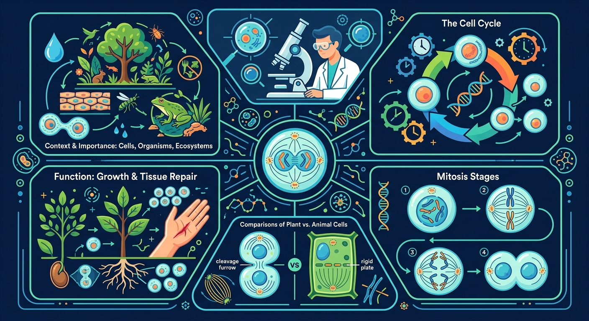
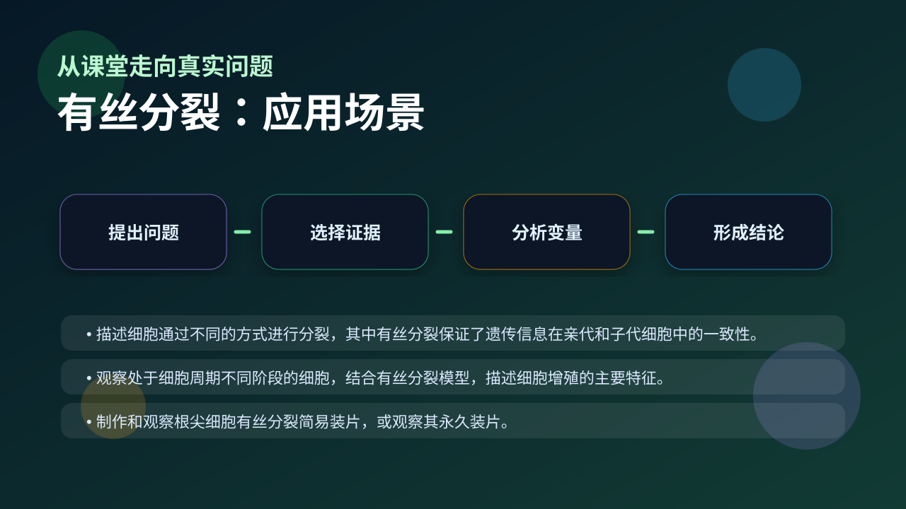

Gallery v1.0.0 · skill v7.14
结构怎样决定功能，细胞层面的变化怎样影响个体生命过程？

先选一个卡点。后面的例子、互动和 AI 学伴都会围绕它给你最小提示。
选择或输入后，本课会围绕你的问题展开。
如果学生只说出概念名称，继续追问：题干里哪个证据最关键？这个证据对应分子、细胞、个体还是生态系统层级？如果改变 染色体形态、着丝粒状态、纺锤体连接和细胞板/缢裂形成 中的一个条件，结果会怎样？这三问能把答案从背诵推进到科学解释。
❓ 为什么有丝分裂时染色体要变成这样？
❓ 纺锤丝和纺锤体到底有啥区别？
❓ 考试老考有丝分裂和减数分裂的区别，到底怎么记？
学完这一课，这些问题你都能自信地回答。
已经知道：学生此前已掌握细胞基本结构（如染色体、纺锤丝）和细胞增殖概念，并理解DNA是遗传物质的基础知识
但问题是：容易混淆染色体与染色单体变化规律，难以理解着丝粒分裂如何导致姐妹染色单体分离，常误判中期与后期染色体行为差异
所以学：当病理科医生分析肿瘤组织切片时，需要准确判断异常分裂相（如多极分裂）所处的时期，这要求精确掌握各期染色体特征与数量变化规律
间期细胞最显著的变化是？
设计实验探究温度/营养液浓度对分裂指数的影响
现象入口：显微镜下可见染色体从散乱、排列到分离，最终形成两个遗传信息一致的子细胞。
机制解释：有丝分裂通过染色体复制、排列、姐妹染色单体分离和细胞质分裂，保证亲子代细胞遗传信息稳定。
证据抓手：证据来自前中后末期图像、染色体数目和DNA含量变化。
变量线索：染色体形态、着丝粒状态、纺锤体连接和细胞板/缢裂形成。做题时先找变量，再判断机制，最后写证据。
情境：判断分裂时期不能只看细胞形状，要看染色体是否排列在赤道板或正在分离。
作答路径：现象：细胞呈椭圆形且中部出现隔膜→机制：植物细胞末期形成细胞板→证据：隔膜处有新生细胞壁物质沉积，同时可见重建的核膜
评分提醒：典型失分：混淆染色单体与染色体计数（如后期误计为2n）、忽视间期DNA复制导致数量关系错误
观察中期细胞：染色体整齐排列在赤道板上，着丝粒未分裂
比较前后期变化：核膜消失与重建、染色单体分离与核仁重现
着丝粒分裂触发后期运动，纺锤丝牵引染色体移向两极
根据细胞板出现判断植物细胞分裂末期

解释生长、组织修复、无性繁殖，都要说明有丝分裂保持遗传稳定。
提交后会检查你的解释是否包含现象、机制和变量。
间期 DNA 复制加倍（2n→4n），末期细胞质分裂后恢复（4n→2n）——看每个时期 DNA 数的台阶式变化。
💡 探究任务：对照各时期名称复述 DNA 数变化：加倍发生在间期，减半发生在末期，前中后三个时期保持不变。
下列哪项数量在有丝分裂后期暂时加倍？
先独立作答，再点选项查看对错与错因。
在显微镜下观察到细胞出现以下哪种特征时，可判断为有丝分裂中期？
有丝分裂过程中，姐妹染色单体分离发生在哪个时期？
植物细胞有丝分裂区别于动物细胞的特点是？
有丝分裂过程中，____复制一次，细胞分裂一次，保证遗传物质平均分配。
答案：DNA
DNA在间期复制，确保子细胞遗传物质稳定
观察洋葱根尖细胞时，应选择____区细胞，此处分裂旺盛。
答案：分生
分生区细胞分裂活动最活跃
植物细胞有丝分裂过程中，下列哪一时期可观察到细胞板形成？
学习小结：有丝分裂通过间期DNA复制和分裂期染色体精确分配，实现遗传物质均等分裂，核心是着丝粒分裂触发姐妹染色单体分离。
把染色体数、染色单体数和DNA分子数混为一谈，是有丝分裂题高频错误。
只说“增加/减少”不够，要写清改变的是 染色体形态、着丝粒状态、纺锤体连接和细胞板/缢裂形成 中的哪一个。
没有实验现象、曲线趋势或结构证据，答案就像猜测。
✅ 实际在后期着丝粒分裂后才分离
💡 混淆染色体形态变化时序
✅ 植物细胞的细胞板最终形成细胞壁
💡 未理解胞质分裂的特殊性
口诀：膜仁消失现两体，形定数晰赤道齐，点裂数增均两极，两消两现重开始
类比：像工厂流水线：间期备料（复制）、前期组装（凝缩）、中期质检（排列）、后期分装（分离）、末期打包（重建）
视频用语音和动态画面回顾本课主线：问题情境 → 机制模型 → 证据判断 → 迁移应用。
旋转 3D 分子模型，观察结构层级。请把结构特点和 有丝分裂 中的功能解释对应起来：结构不是装饰，而是功能的证据。
💡 操作提示：拖拽旋转模型，思考“形状、空间位置、结合位点”如何影响生命活动。
列出分裂期四个阶段名称及其标志性事件
分析某细胞显微图中染色体散乱分布、核膜消失，判断所处时期
设计实验方案验证秋水仙素通过抑制纺锤体形成使细胞停滞在中期